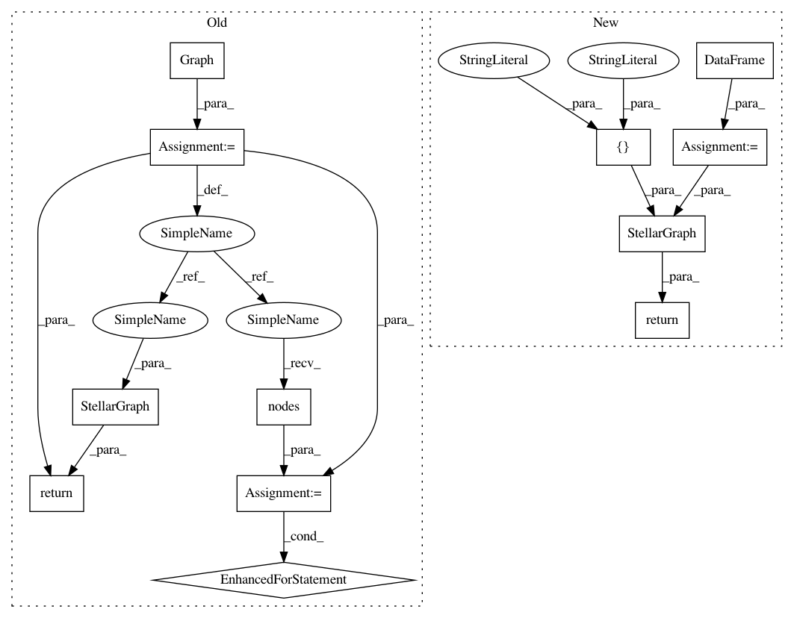

b17c639862ab1b9ab14e8c55a70e0ce002967e3f,tests/mapper/test_node_mappers.py,,example_graph_2,#Any#,44
Before Change
// FIXME (/릯): Consider using graph fixtures
def example_graph_2(feature_size=None):
G = nx.Graph()
elist = [(1, 2), (1, 3), (1, 4), (3, 2), (3, 5)]
G.add_nodes_from([1, 2, 3, 4, 5], label="default")
G.add_edges_from(elist, label="default")
// Add example features
if feature_size is not None:
for v in G.nodes():
G.nodes[v]["feature"] = int(v) * np.ones(feature_size, dtype="int")
return StellarGraph(G, node_features="feature")
else:
return StellarGraph(G)
After Change
// FIXME (/릯): Consider using graph fixtures
def example_graph_2(feature_size=None):
nlist = [1, 2, 3, 4, 5]
nodes = pd.DataFrame(repeated_features(nlist, feature_size), index=nlist)
elist = [(1, 2), (1, 3), (1, 4), (3, 2), (3, 5)]
edges = pd.DataFrame(elist, columns=["source", "target"])
return StellarGraph(nodes, edges)
def example_hin_2(feature_size_by_type=None):
nodes_type_1 = [0, 1, 2, 3]
In pattern: SUPERPATTERN
Frequency: 3
Non-data size: 12
Instances
Project Name: stellargraph/stellargraph
Commit Name: b17c639862ab1b9ab14e8c55a70e0ce002967e3f
Time: 2020-03-03
Author: Huon.Wilson@data61.csiro.au
File Name: tests/mapper/test_node_mappers.py
Class Name:
Method Name: example_graph_2
Project Name: stellargraph/stellargraph
Commit Name: 55ed2c7f725791f31983560c4ad520b2e0dc8e58
Time: 2020-03-03
Author: Huon.Wilson@data61.csiro.au
File Name: tests/data/test_metapath_walker.py
Class Name:
Method Name: create_test_graph
Project Name: stellargraph/stellargraph
Commit Name: b17c639862ab1b9ab14e8c55a70e0ce002967e3f
Time: 2020-03-03
Author: Huon.Wilson@data61.csiro.au
File Name: tests/mapper/test_node_mappers.py
Class Name:
Method Name: example_graph_2
Project Name: stellargraph/stellargraph
Commit Name: b17c639862ab1b9ab14e8c55a70e0ce002967e3f
Time: 2020-03-03
Author: Huon.Wilson@data61.csiro.au
File Name: tests/mapper/test_link_mappers.py
Class Name:
Method Name: example_HIN_homo